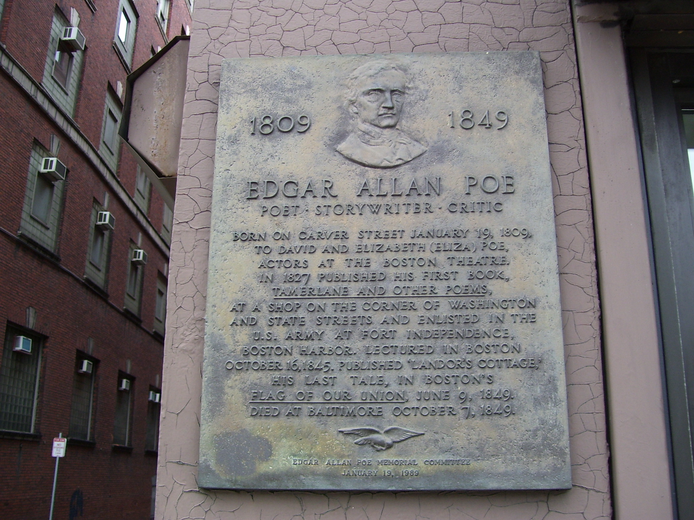

Edgar Allan Poe


Edgar Allan Poe (né Edgar Poe; January 19, 1809 – October 7, 1849) was an American writer, poet, editor, and literary critic who is best known for his poetry and short stories, particularly his tales involving mystery and the macabre. He is widely regarded as one of the central figures of Romanticism and Gothic fiction in the United States and of early American literature.[1] Poe was one of the country's first successful practitioners of the short story, and is generally considered to be the inventor of the detective fiction genre. In addition, he is credited with contributing significantly to the emergence of science fiction.[2] He is the first well-known American writer to earn a living exclusively through writing, which resulted in a financially difficult life and career.[3] Poe was born in Boston. He was the second child of actors David and Elizabeth "Eliza" Poe.[4] His father abandoned the family in 1810, and when Eliza died the following year, Poe was taken in by John and Frances Allan of Richmond, Virginia. They never formally adopted him, but he lived with them well into young adulthood. Poe attended the University of Virginia but left after only a year due to a lack of money. He frequently quarreled with John Allan over the funds needed to continue his education as well as his gambling debts. In 1827, having enlisted in the United States Army under the assumed name of Edgar A. Perry, he published his first collection, Tamerlane and Other Poems, which was credited only to "a Bostonian". Poe and Allan reached a temporary rapprochement after the death of Allan's wife, Frances, in 1829. However, Poe later failed as an officer cadet at West Point, declared his intention to become a writer, primarily of poems, and parted ways with Allan. Poe switched his focus to prose and spent the next several years working for literary journals and periodicals, becoming known for his own style of literary criticism. His work forced him to move between several cities, including Baltimore, Philadelphia, and New York City. In 1836, when he was 27, he married his 13-year-old cousin, Virginia Clemm. She died of tuberculosis in 1847. In January 1845, he published his poem "The Raven" to instant success. He planned for years to produce his own journal, The Penn, later renamed The Stylus. But before it began publishing, Poe died in Baltimore in 1849, aged 40, under mysterious circumstances. The cause of his death remains unknown and has been attributed to many causes, including disease, alcoholism, substance abuse, and suicide.[5] Poe's works influenced the development of literature throughout the world and even impacted such specialized fields as cosmology and cryptography. Since his death, he and his writings have appeared throughout popular culture in such fields as art, photography, literary allusions, music, motion pictures, and television. Several of his homes are dedicated museums. In addition, The Mystery Writers of America presents an annual Edgar Award for distinguished work in the mystery genre.
Early life, family and education
 Edgar Poe was born in Boston, Massachusetts, on January 19, 1809, the second child of American actor David Poe Jr. and English-born actress Elizabeth Arnold Hopkins Poe. He had an elder brother, Henry, and a younger sister, Rosalie.[6] Their grandfather, David Poe, had emigrated from County Cavan, Ireland, around 1750.[7] His father abandoned the family in 1810,[8] and his mother died a year later from pulmonary tuberculosis. The two-year-old Poe was then taken into the home of John Allan, a successful merchant in Richmond, Virginia, who dealt in a variety of goods, including cloth, wheat, tombstones, tobacco, and slaves.[9] The Allans served as a foster family and gave him the name "Edgar Allan Poe",[10] although they never formally adopted him.[11] The Allan family had Poe baptized into the Episcopal Church in 1812. John Allan alternately spoiled and aggressively disciplined his foster son.[10] The family sailed to the United Kingdom in 1815. Poe attended the grammar school in Irvine, Ayrshire, Scotland (where Allan had been born), before rejoining the family in London in 1816. There he studied at a boarding school in Chelsea until summer 1817. He was subsequently entered at the Reverend John Bransby's Manor House School in Stoke Newington, then a suburb 4 miles (6 km) north of London.[12] Poe moved with the Allans back to Richmond, Virginia, in 1820. In 1824, he served as the lieutenant of the Richmond youth honor guard as the city celebrated the visit of the Marquis de Lafayette.[13] In March 1825, Allan's uncle and business benefactor William Galt died, who was said to be one of the wealthiest men in Richmond,[14] leaving Allan several acres of real estate. The inheritance was estimated at $750,000 (equivalent to $21,000,000 in 2024).[15] By summer 1825, Allan celebrated his expansive wealth by purchasing a two-story brick house called Moldavia.[16] Poe may have become engaged to Sarah Elmira Royster before he registered at the University of Virginia in February 1826 to study ancient and modern languages.[17][18] The university was in its infancy, established on the ideals of its founder, Thomas Jefferson. It had strict rules against gambling, horses, guns, tobacco, and alcohol, but these rules were mostly ignored. Jefferson enacted a system of student self-government, allowing students to choose their own studies, make their own arrangements for boarding, and report all wrongdoing to the faculty.[citation needed] The unique system was rather chaotic, and there was a high dropout rate.[19] During his time there, Poe lost touch with Royster and also became estranged from his foster father over gambling debts. He claimed that Allan had not given him sufficient money to register for classes, purchase texts, or procure and furnish a dormitory. Allan did send additional money and clothes, but Poe's debts increased.[20] Poe gave up on the university after a year, but did not feel welcome to return to Richmond, especially when he learned that his sweetheart, Royster, had married another man, Alexander Shelton. Instead, he traveled to Boston in April 1827, sustaining himself with odd jobs as a clerk and newspaper contributor. Poe started using the pseudonym Henri Le Rennet during this period.[21]